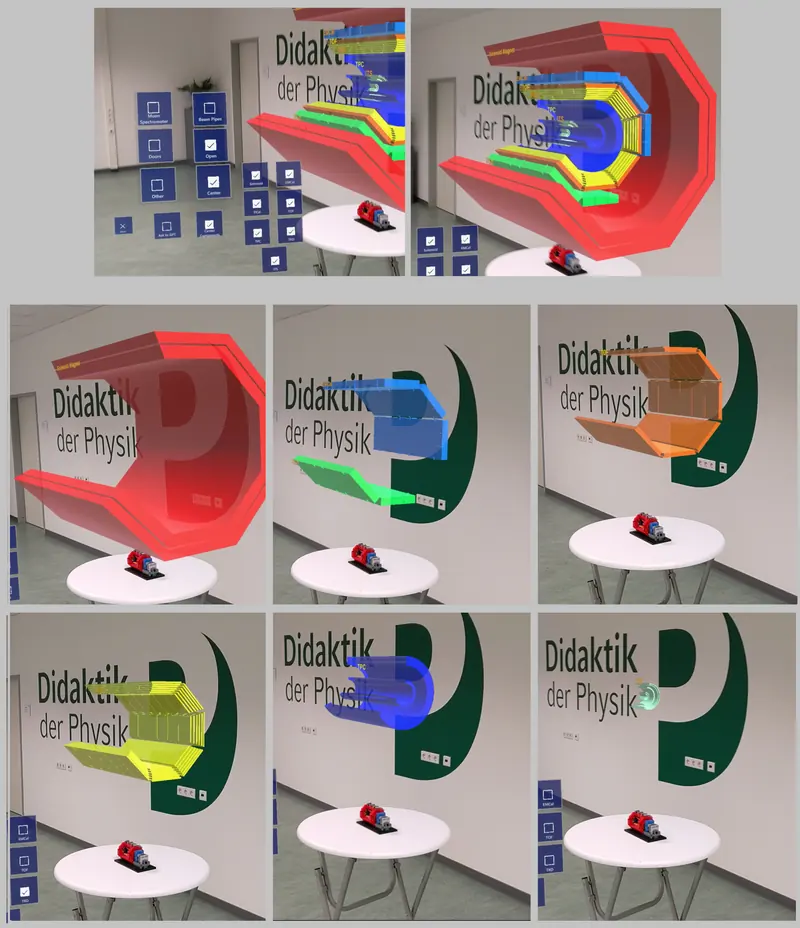

AR/VR-Lernerlebnisse
Mein Beitrag
Ich entwickelte eine HoloLens-App, die einen interaktiven 3D-Detektor mit einem physischen LEGO-Modell verbindet.
Einsatz im Beruf
Anlagen kennenlernen, Inspektionen angeleitet durchführen und Abläufe wiederholt üben.
- Mein Beitrag
- Entwicklung der AR-Anwendung
- Werkzeuge und Methoden
- Unity · HoloLens · LEGO
So habe ich die Anwendung entwickelt
Ich entwickelte eine Unity-Anwendung für HoloLens, die ein LEGO-Modell mit einer interaktiven 3D-Ansicht des ALICE-Detektors verbindet. Lernende wählen Bauteile aus und erkunden ihr Zusammenspiel. Das physische Modell bietet dabei einen Bezugspunkt für die digitale Darstellung.
Einsatz in der Weiterbildung
Bei der Einarbeitung könnten Technikerinnen und Techniker Bauteile an einer echten Anlage erkennen und sehen, was sie kontrollieren müssen. Ist die Anlage nicht verfügbar, lässt sich derselbe Ablauf vorab in VR üben.
Wirkung prüfen
Lassen Sie die Lernenden die Inspektion ohne eingeblendete Hinweise wiederholen. Erfassen Sie ausgelassene Prüfpunkte, Fehler in der Reihenfolge und ob die Lernenden den Zweck jedes Schritts erklären können.
Projektbild
